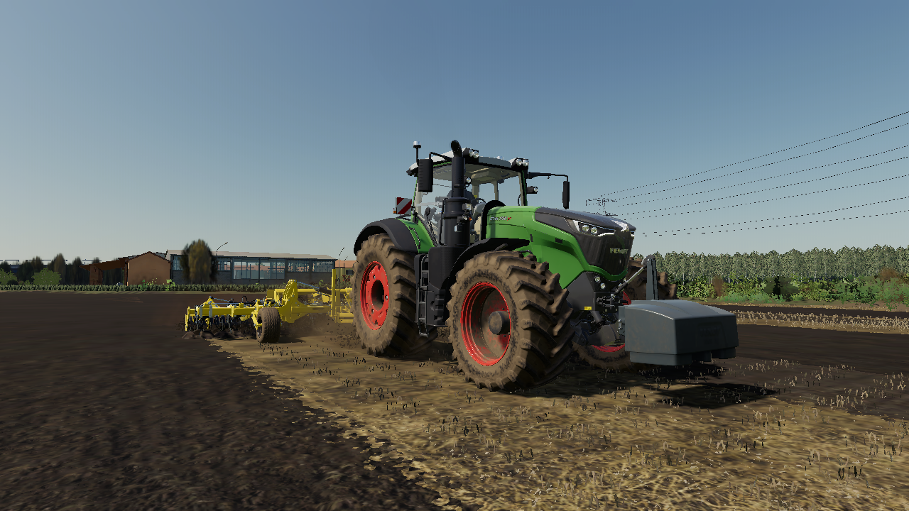
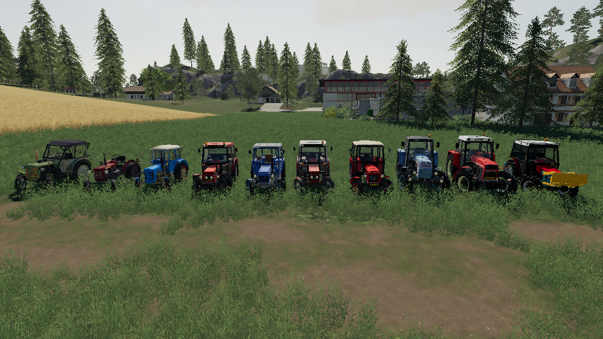
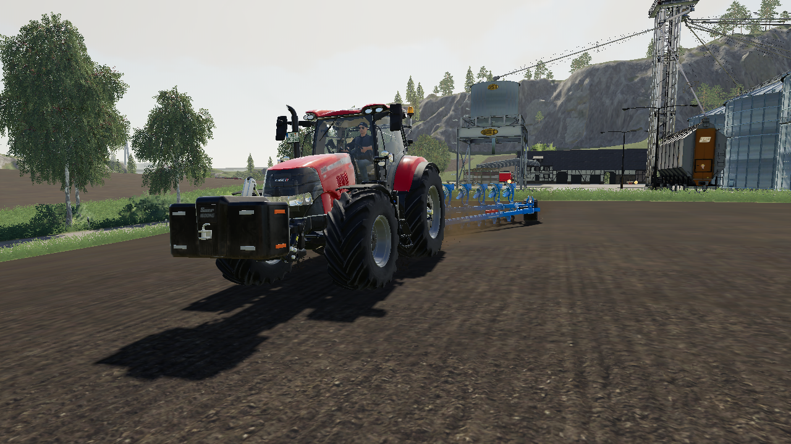
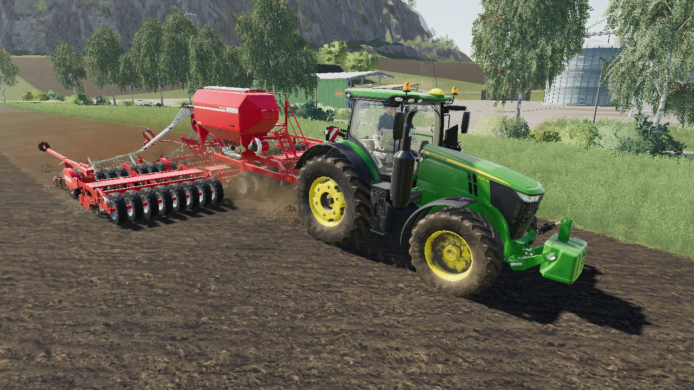
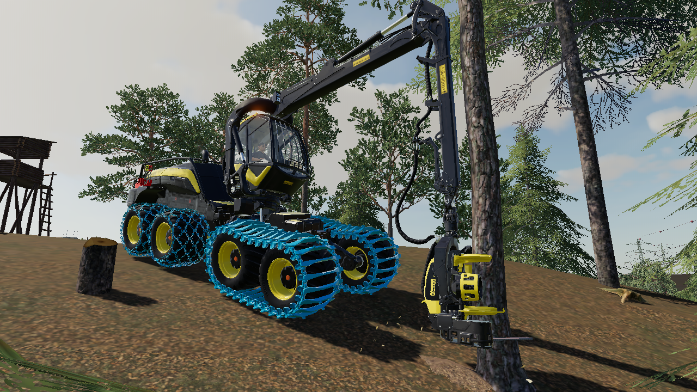
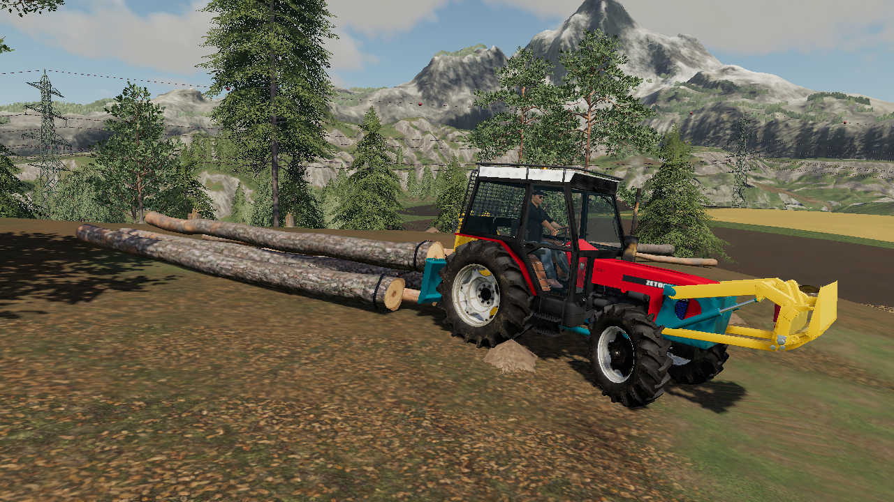
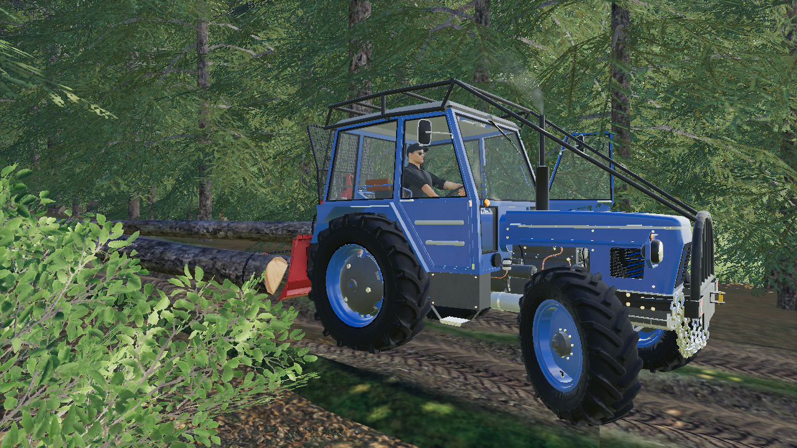
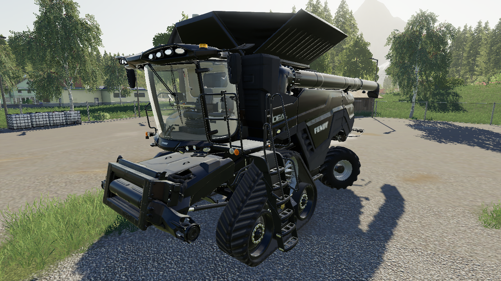
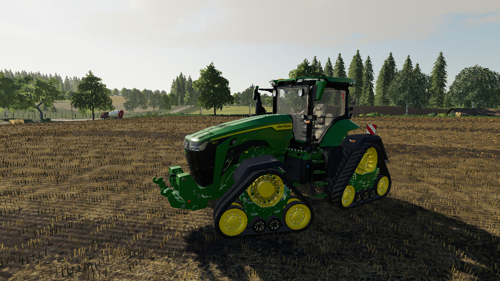
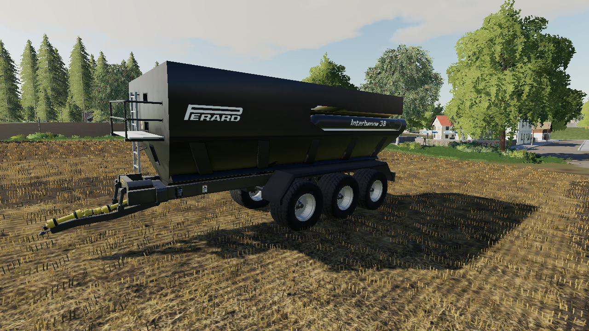

Fendt 1050 Vario

Traktor Fendt 1050 Vario zachycen během podrývání půdy.
Zetor Tractors

Traktory značky Zetor mohou být skvělým pomocníkem na každé farmě a v každém lese.
Case IH Puma

Traktor Case IH Puma během orby pole.
John Deere 7R

Traktor John Deere 7R se secím strojem Horsch Pronto 9 DC během setí ovsa.
Ponsse Scorpionking

Harvestor Ponsse Scorpionking během kácení dřeva v lese.
Zetor 7745 UKT

Zetor 7745 UKT je speciálně upravený traktor vhodný na tahání dřeva z lesa.
Zetor 5645

Zetor 5645 s lesní nástavbou s lesním navijákem Tajfun.
Fendt Ideal 10T

Kombajny Fendt Ideal 10T patří mezi jedny z největších na světě.
John Deere 8RX

John Deere 8RX díky svým pásům působí na půdu menším tlakem než ostatní kolové traktory, tudíž tolik neutužuje půdu.
Perrard Interbenne 38

Perrard Interbenne 38 je objemný překládací vlek. Díky svému dlouhému komínu je schopen přesypávat plodinu přes příkop odvozu, který již čeká.
{kind=link}
{kind=link}
{kind=link}
{kind=link}
{kind=link}
{kind=link}
{kind=link}
{kind=link}
{kind=link}
{kind=link}